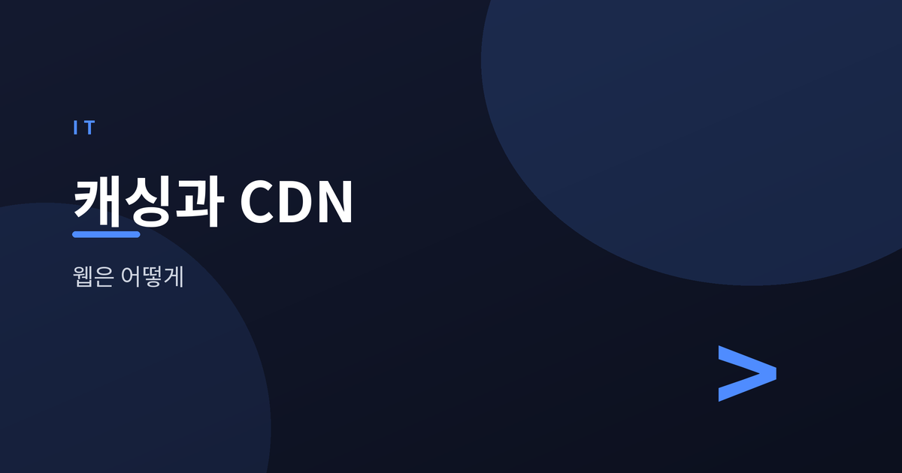
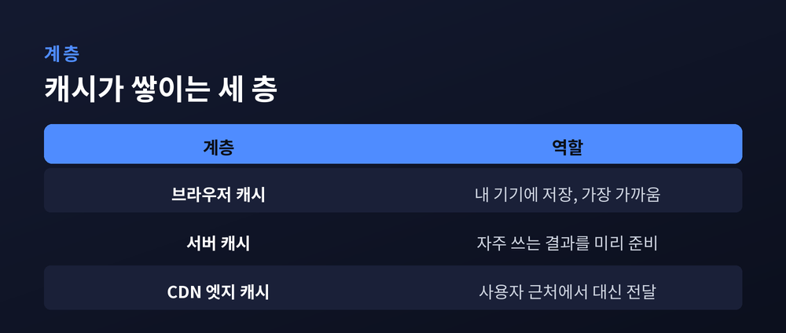
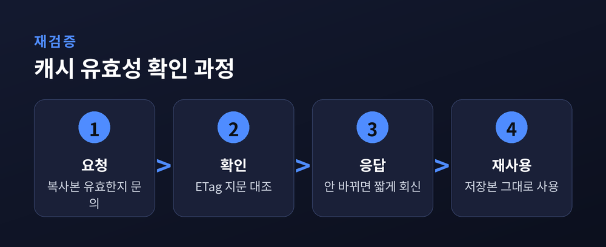
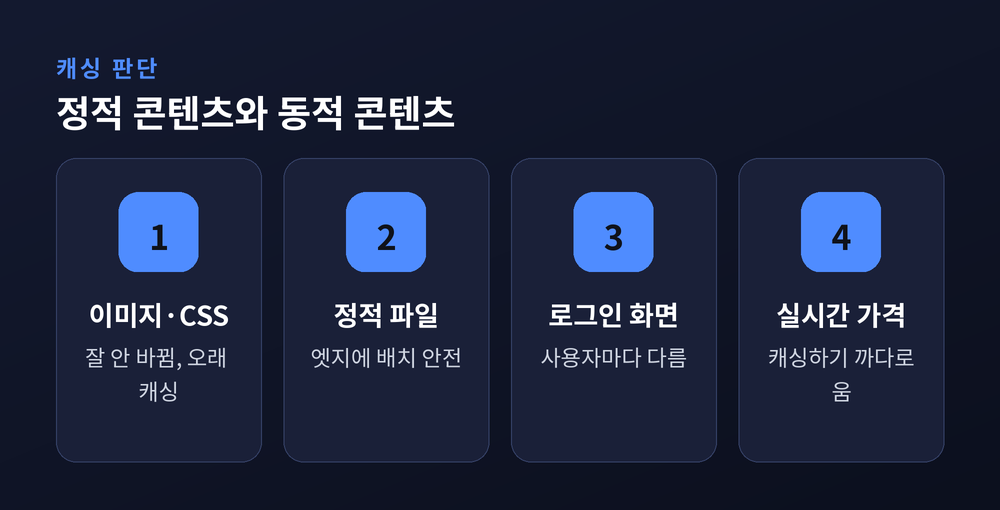

웹 페이지는 어떻게 빨라지나

이번 글에서는 웹 페이지가 빨라지는 원리를 캐싱과 CDN을 중심으로 정리해 보겠습니다. 매일 쓰는 웹인데 그 속도의 비밀은 의외로 덜 알려져 있습니다. 결론부터 말씀드리면, 핵심은 하나입니다 — 자주 쓰는 데이터를 사용자 가까이에 미리 두는 것입니다.
캐시는 자주 쓰는 데이터를 가까운 곳에 저장해 두었다가 다시 꺼내 쓰는 임시 저장 공간입니다. 원본을 매번 멀리서 가져오는 대신, 곁에 둔 복사본을 재사용합니다.
책상 위에 자주 보는 책을 꺼내 두는 것과 비슷합니다. 도서관까지 다시 가지 않아도 손만 뻗으면 되니까요.
웹에서도 원리는 같습니다. 한 번 받은 이미지나 파일을 저장해 두면, 다음 방문 때는 다시 내려받지 않아도 됩니다. 그만큼 페이지가 빠르게 뜹니다.
캐시는 한 곳에만 있지 않습니다. 요청이 지나는 길목마다 층층이 자리합니다.
가장 가까운 곳은 브라우저 캐시입니다. 내 컴퓨터 안에 저장되어, 방문했던 페이지의 자원을 그대로 재사용합니다. 그다음이 서버 캐시입니다. 자주 요청되는 결과를 서버 쪽에서 미리 만들어 두고 빠르게 돌려줍니다. 마지막이 CDN의 엣지 캐시입니다. 사용자와 원본 서버 사이에서 콘텐츠를 대신 품고 있습니다.
층이 가까울수록 응답이 빠릅니다. 브라우저 캐시에서 해결되면 네트워크를 아예 타지 않으니까요.

찾는 데이터가 캐시에 있으면 캐시 히트, 없으면 캐시 미스라고 부릅니다. 히트가 많을수록 페이지는 빨라집니다.
문제는 복사본이 낡을 수 있다는 점입니다. 원본이 바뀌었는데 옛 복사본을 계속 내주면 곤란합니다. 그래서 유효기간을 둡니다.
서버는 응답에 Cache-Control 헤더를 실어 "이 자원은 얼마 동안 재사용해도 된다"는 TTL을 알려줍니다. 기간이 지나면 만료됩니다. 이때 ETag가 쓰입니다. 자원마다 붙는 일종의 지문으로, 브라우저가 "내 복사본이 아직 유효한가"를 물으면 서버는 바뀐 게 없을 경우 내용 대신 짧은 확인만 돌려줍니다. 불필요한 전송을 줄이는 방식입니다.

CDN은 콘텐츠 전송 네트워크의 줄임말입니다. 세계 곳곳에 엣지 서버를 두고, 원본 콘텐츠의 복사본을 미리 배치합니다.
핵심은 거리입니다. 데이터도 물리적으로 이동하는 만큼, 서버가 멀면 지연이 생깁니다. 지구 반대편 서버까지 오가는 시간은 결코 짧지 않습니다.
CDN은 사용자와 지리적으로 가까운 엣지 서버에서 콘텐츠를 내줍니다. 서울 사용자는 서울 근처 엣지에서, 파리 사용자는 파리 근처 엣지에서 받습니다. 오가는 거리가 줄어드니 지연도 줄어듭니다.
처음 요청한 콘텐츠가 엣지에 없으면, 엣지가 원본에서 한 번 받아 와 저장해 둡니다. 그다음부터는 같은 지역의 다른 사용자도 그 엣지에서 곧바로 받습니다. 한 번의 수고가 여러 사람의 속도로 돌아오는 구조입니다.
예전엔 모든 요청이 원본 한 곳으로 몰렸습니다. 지금은 가까운 엣지가 대부분을 나눠 받습니다. 원본의 부담이 가벼워지니, 갑자기 접속이 몰려도 잘 버팁니다.
캐시가 늘 좋기만 한 것은 아닙니다. 가장 까다로운 대목은 무효화입니다.
콘텐츠가 바뀌면 여기저기 흩어진 낡은 복사본을 걷어내야 합니다. 그런데 어떤 것이 아직 쓸 만하고 어떤 것이 낡았는지 정확히 가려내기가 쉽지 않습니다. 너무 오래 두면 옛 내용이 보이고, 너무 자주 지우면 캐시의 이점이 사라집니다.
여기서 정적 콘텐츠와 동적 콘텐츠의 차이가 드러납니다. 이미지나 CSS, 자바스크립트 파일처럼 한 번 만들면 잘 바뀌지 않는 정적 콘텐츠는 오래 캐싱해도 안전합니다. 반면 로그인 후 화면이나 실시간 가격처럼 사용자와 시점에 따라 달라지는 동적 콘텐츠는 함부로 캐싱하기 어렵습니다. 잘못 캐싱하면 다른 사람의 정보가 보이는 사고로 이어지기도 합니다.
그래서 실무에서는 둘을 나눠 다룹니다. 정적 자원은 CDN 엣지에 길게 맡기고, 동적 응답은 아주 짧게 캐싱하거나 아예 캐싱하지 않습니다. 파일 이름에 버전을 붙여 내용이 바뀌면 주소 자체를 바꾸는 방법도 흔히 씁니다. 낡은 복사본을 애써 지우는 대신, 새 주소로 갈아타게 하는 우회입니다.

"컴퓨터 과학에서 어려운 두 가지는 캐시 무효화와 이름 짓기"라는 우스개가 괜히 나온 말은 아닌 셈입니다. 편리함과 정확함 사이에서 균형을 잡는 일이 그만큼 까다롭다는 뜻이겠지요.
끝으로 한 마디만 더 드리겠습니다. 캐싱과 CDN은 화려한 기술처럼 보이지 않습니다. 하지만 우리가 누리는 웹 속도의 상당 부분이 여기서 나옵니다.
빠른 웹의 비결은 결국 하나로 모입니다 — "가까이 두고, 다시 쓴다."
오늘 무심히 넘긴 그 빠른 페이지 뒤에, 이런 조용한 설계가 있었다고 생각하면 웹이 조금 달리 보이실지도 모르겠습니다.